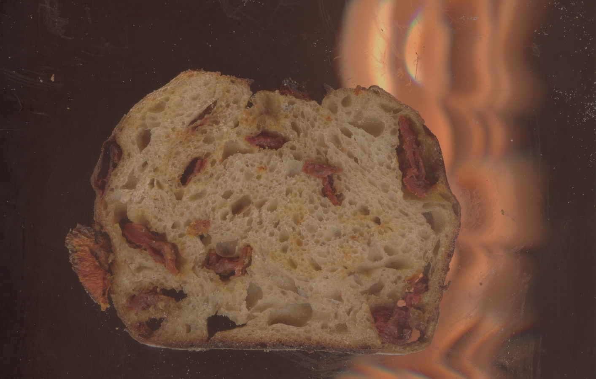
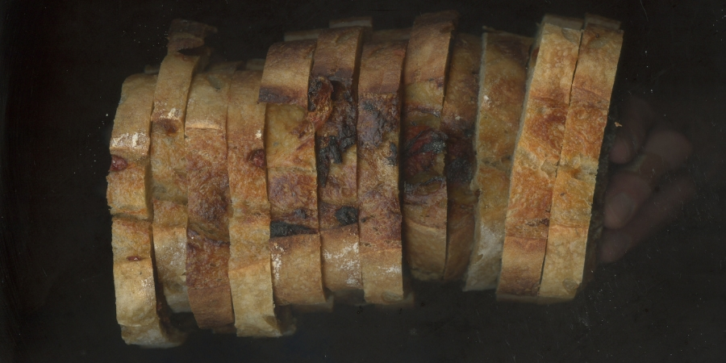
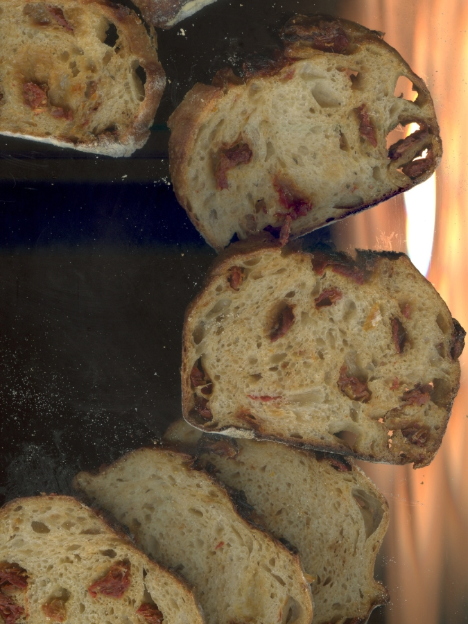
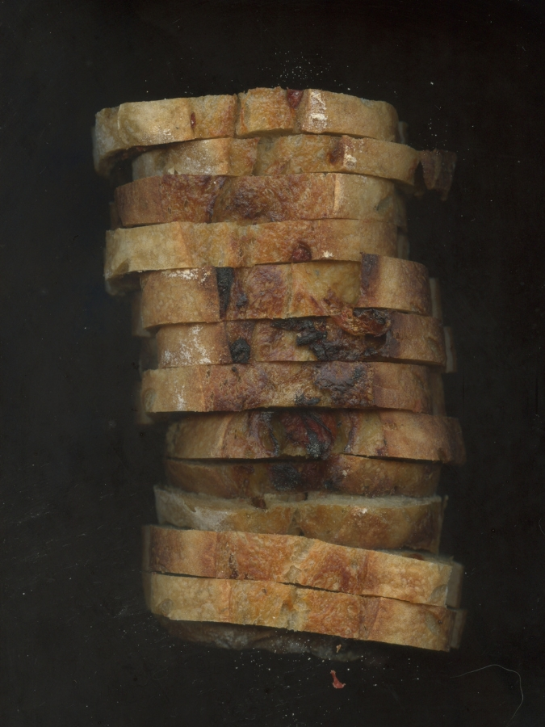

- lunes a viernes: Junin 3571. Villa Ballester
- martes y jueves: Av. córdoba y Alem, Microcentro, CABA.
- viernes: Nuñez 4412, Saavedra, CABA.


Una vez que usted reciba su pans, podrá disfrutarlo fresco los siguientes 2 o 3 días posteriores.
Si desea guardarlo para despúes, usted debe asegurarse de hacerlo en una bolsa de papel, envuelto en papel, un repasador limpio o denrto de una panera. Conservelo a temperatura ambiente.

Si lo que quiere es congelarlo, puede hacerlo entero o rebanado hasta por 6 meses. Envuélvalo en algo apto antes de llevarlo al freezer.
Si usted lo cortó en rebanadas puede llevarlas directamente del freezer a la tostadora o airfryer.

Para devolverle su corteza, humedezca ligeramente la superficie y lleve el pans al horno precalentado por 10 a 15 minutos a 200 °C.
El frío acelera el endurecimiento del pans y afecta su textura, por favor no lo guarde en la heladera.